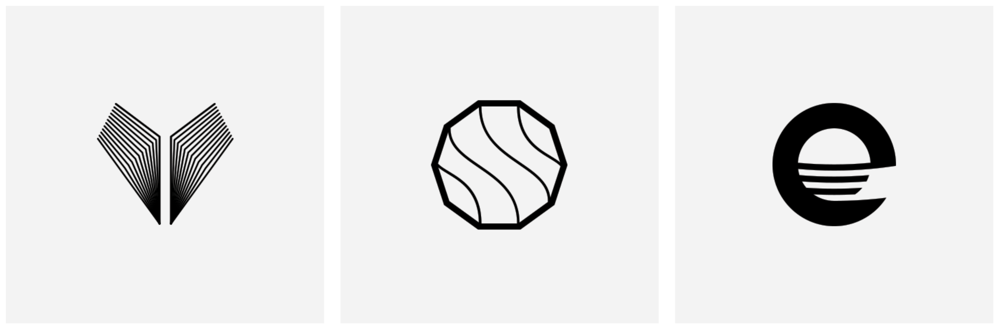

- Going from freelancing to starting a creative agency
- What is good brand identity design?
- Putting together a system, rather than just designing individual elements
- How flexible are brand identity systems supposed to be, anyway?
- Client talk – the initial conversation and establishing the client’s “manifesto”
- The creative process – Tom shares their approach, step by step
- Money – and how value is perceived, from one project to another
- Common pitfalls for designers
Talk Illustration: Hi, Tom!
Tom Ralston: Hey Miruna, how are you doing? Nice to meet you!
T.I.: Nice to meet you too, thanks for doing this interview! Starting with a little bit of a background, about you. You’ve been working as a designer for how many years now?
T.R.: Yes. For 7-8 years now. Yeah, yeah, it is a bit of a blur at this point but it’s about 7 years.
T.I.: You’ve been working as a freelancer for a while and now you have your own agency, right?
T.R.: Actually, I’ve kind of started an agency first, because I was at art school with my friends – and now business partner, Tim – and we kind of came out of art school, having done some sort of painting background final. We use to make short videos. We were just messing around, really, having fun and then, a couple years later, we realized, oh my God! We’ve got to get jobs; we got to do something – and that was after doing administrative jobs and all sorts of boring stuff.
Yes, so, we decided that we should be doing something creative, but at that point we did not have the experience to start freelancing – we did not have the portfolio. So we set up the business in order just to get into the industry. And now, seven years later, I have done lots of freelancing in that time. But the business has always been our main focus.
T.I.: So, when did you start the agency?
T.R.: Uhm, it would have been in 2008 I think. The reason why it’s been a blur is because, in those early days, we did not have the confidence to stand up and say “we’re a creative agency”. We were just going around to our friends and saying, “Hey, do you have any work we can do for you”, you know?
And I’d always been interested in creating logos. I remember creating a logo for my brother’s yoga studio, many many moons ago, you know. And back then, I don’t even know, it might have been in Microsoft Word or something (laughs). You know, pulling elements together however I could. That’s kind of how I started back in the day.

T.I.: What is a good brand identity design?
T.R.: It’s a tough question because it’s very subjective, cause what I like you might not like. I suppose, breaking the question apart, just the term “brand” is a very evasive term, lots of people argue about what they believe a brand is.
There are different audiences for different brands. I have to make an analogy. Look at it in music terms: there might be a fantastic logo for a kind of Hackney Hardcore rave kind of act, but it wouldn’t appeal to a heavy metal audience. But that doesn’t make it a bad brand identity, it just doesn’t appeal to that particular audience. So in that sense it’s a bit subjective.
T.I.: Is that part of the brand identity, researching the audience…?
T.R.: Absolutely! A hundred percent, yeah. Whatever audience the client is trying to reach, that is who you’re designing for. And of course you’re designing for the client as well. And if they’re doing a good job at what they do, they should know their audience inside out. And of course, what I’ve learnt many times over, is that often that isn’t the case (laughs). Often the client they might be amazing at what they do, they might have a fantastic product, or a great voice, but they don’t know how to connect to that audience, or perhaps they are going after the wrong kind of audience.
T.I.: Or sometimes they have no idea who their audience is.
T.R.: Yeah, yeah, absolutely. And if never ceases to amaze me how often that happens.
T.I.: So, what do you do in this case?
T.R.: It’s basically a conversation. That is how it always starts for us. You know, often times people approach us and they think they have one problem, when we get into a discussion with them. We kind of realized the main problem is, as we were saying, they don’t know the audience.
Going back to branding, to me, a brand is a projection of who we are, of who we want to be and how we want to be perceived. That’s where we want to get at, in the initial conversation. Trying to understand what they do, how they want to be perceived and how they should be perceived, if they’re gonna sell their product or reach their audience. A brand is carving out little corners of the worlds and saying “this is where I’m staking my claim, this is my niche, this is who I want to be and how I want to communicate” and that’s what we try and help people do.
T.I.: I noticed lately that designers talk about a system when they talk about brand identity design, so instead of just putting together individual elements, they think about creating a system which they can later adapt and grow with the brand. What is this system? How would you define it?
T.R.: Again, it’s all kinds of interpretive terminology. To me, I think of system as a visual language. Do you mean the stuff that surrounds the logo effectively?
T.I.: I think it’s the whole brand identity, when you create everything that you conceive for that brand.
T.R.: I think the reason systems are more and more frequent these days is because of the technology, of the platforms and because of everything developing so quickly that it’s no longer just logo or colour. Now, illustrations can move. The logo can move. Dynamic logos are a really interesting trend right now. And I think it’s a danger in itself, that this is a trend; but when used properly, I think it can be fantastic. When you have logos that are always shifting, as long as they are staying true to what they are designed to do, it’s fantastic.
There is a company called A to B. Their logo is spelled A-2-B and I think they sell travel products? I got stuck with this logo in my head because the A-2-B basically moves all the time, it stretches out and it reflects people’s journeys. And I always thought this was a fantastic example of a dynamic logo.
The fun part as a designer is exploring. It’s part of the process: when you’re designing a logo, you create a system that it sits in, a visual language. The logo itself is just a stamp but once you have that visual language, it sets the tone for the brand and it can be immersive and I think that a visual system allows you to communicate more consistently and with more confidence. Typography is a subtle way to speak volumes in your company and your ethos. And I think today there are so many more elements to visual systems, especially when dealing with technology. Patents and colours and everything shifting: you can even see these metamorphoses and it’s not just technology and computers, it’s also the environments, particularly for retail. The possibilities are endless basically.
T.I.: So basically, having so many platforms that you can use the identity on, this represents the system? I mean, having all these platforms together.
T.R.: Yes. I think that everyone has this feeling to some degree when you’re out and about and you see, for example on the internet, that someone has created a bus stop that has an interactive billboard. I always get that feeling that I’m living in a film, you’ve entered the future somehow. There was even that interactive supermarket, I think it was in China but I’m not sure. They had products in a train station so while you were waiting for the train, you could use your phone to swipe barcodes and select the products you want for your shopping.
T.I.: I saw something similar, it was in a bus station I think. You could pay with a credit card in order to donate for a charity cause and there was an interactive video thing with the hands. It was a close-up on hands with handcuffs, do you know it?
T.R.: That’s right, I’ve seen that.
T.I.: Yes, and you’d swipe and the hands just move. It’s amazing.
T.R.: And there’s something creepy about it. It feels like you could be attacked by advertising anywhere. I mean, this is the kind of stuff that was in old sci-fi movies.
T.I.: Exactly, you could see it in movies like 10-15 years ago and now it’s happening.
T.R.: Yes, remember “Minority Report”? When did that come out? Must have been a decade ago. We’re getting there: advertising that speaks to you.
T.I.: Yes, it’s exciting!
T.R.: Yeah. And when people don’t react well is because the company isn’t adhering to that tone. It just feels awkward when a brand that has a particular tone, maybe it’s kind of conservative and suddenly does an installation that feels very futuristic and doesn’t quite work. I think that’s when stuff become a bit gimmicky. For me, it all comes from the brand and as a designer; I don’t do interactive stuff like that. Usually, we’re there for the inception of the brand. When we start, it isn’t a brand and we start focusing on the identity and finding the tone of voice and the visual plan.
T.I.: I also have a question about the system and how you created it. I’m not sure it’s a good question because it might be too vague.
T.R.: It is a tricky question because it’s hard to narrow it down. It all comes down to that initial conversation with the client where we talk broadly about what their problems are in terms of design and how we can help them, but it’s also about probing them and trying to find out where they should be positioned on the market and then, from the technical design side, we start off with the logo, the wordmark, and that opens all these doors to choices that affect that wider system. It’s the information we drag out from that initial conversation that might hint at what direction they should be heading towards and that might just affect the colour palette and the colour palette affects the typographic choice. And it’s an experiment for us, to see what works.
And the brief that we create, from that initial meeting, is always mentally running in our minds, we are always turning to the original brief, to check that the decisions make sense.
So the question that we absolutely love to ask our clients is: the adjectives that they use to describe their company. And often times, how they would describe themselves, if it’s a smaller company. For example, we say are you more young and energetic, or are you traditional, or more conservative, you know, whatever springs to mind. And if they say young and energetic, that will absolutely affect the logo and then from there it will affect the colour palette and the typographic choices.
That doesn’t mean everything has to be young and full of energy, but it’s creating a sense of who you are and what the company stands for. That’s kind of how we begin to create a system.
T.I.: So the brief is the core of it.
T.R.: Absolutely, you got it. And so, hence, that’s my company’s main core.
T.I.: That was a good choice of words!
T.R.: Well, it is becoming embarrassing now, because we chose the name, you know, because that is what we believe in. That’s what we are passionate about. But it’s always really awckward now because it comes a in every meeting, when we want to say, you know, “This is the core…”and, you know, you can’t drop your company name in a conversation like that.
T.I.: Or maybe this is your brand name, you know. This kind of branding.
T.R.: Yeah. Totally. I tell you, there is nothing harder than branding your own company.
T.I.: Oh, yeah.
T.R.: Yeah. We’ve done it twice now and we agreed that the next time that we’re gonna approach another agency… cause it’s just hard. When you get so immersed into someone else’s questions, you start to get kind of crazy.
T.I.: Yeah, and you never get to the right thing – I know, I have this problem with my own personal branding, I haven’t been able to do anything yet.
T.R.: Yeah, well I love your site.
T.I.: Aah! Thank you!
T.R.: I spent a while just reading all the interviews.
T.I.: I actually just redesigned it few weeks ago, so it is brand new right now.
T.R.: Aha, I wish I’d seen it previously.
T.I.: It was ok, but I wasn’t functional and… anyway. This is great. I like it now.
T.R.: So, was it like a huge nightmare?
T.I.: Kind of, but the good thing is that I spent exactly 10 minutes doing the logo and that was it. And I actually hired someone else to do the design and the programming and I just kind of, interfered, you know, gave a direction mainly.
T.R.: Well, it sounds like everything is right because if you try to do it yourself, you don’t have that time to interfere.
T.I.: And you could probably spend probably a year just, you know, working and working on it and not getting anywhere.
T.R.: Exactly. I think it was 2012 when we did our own website, the first time, you know. And you’ll never be happy with that either, right?
T.I.: Yeah. Because you did it and known that you could have done it better in another way and it’s crazt. So the best thing is: hire someone else, get it over with and move on.
T.R.: Yeah, absolutely, absolutely. But, yeah, it looks great, so congrats.
T.I.: Thanks, it’s great to hear. How do you make sure that this system that you create is a flexible system, because I keep reading about this and designers keep saying, “Ah, you know, systems should be flexible to adapt, when the brand grows and so on.” So how do you define flexible and how do you make sure you make it flexible?
T.R.: Yeah, yeah, it is an interesting one. Quite honestly, I’m not sure how flexible systems should be. I think there’s a kind of paradox in design – in that we keep talking about creating timeless logos, timeless brands and even we say, you know, we have a logo check-list. It is quite a common thing for designers to say this, “we have a checklist of things”. I don’t know who came up with this originally, but the idea is that it’s simple, it’s memorable, it’s timeless, it’s versatile and it’s appropriate. And that third one, timeless, we use it all the time but we admit that it’s a bullshit term. No brand is timeless. No identity is timeless.
T.I.: Otherwise they would not change their logos, even the big companies.
T.R.: Exactly, exactly and you know, they are Coca Colas of the world who, you know….The logo itself has been around long time. As you said, the idea of being flexible is just admitting the company has changed. You know, company drastically change sometimes. And you know, sometimes is pays to change overnight, but they never do because there is always some kind of time lapse between the decision to change and then rolling it out.
I think the term “flexible” to me is about rather than every 5 years having a radical overhaul of your brand – just saying, “We need a re-brand and, you know, do you want to change our name? Where do we stand and what’s our position in the market?” I think the idea of being “flexible” is just having a strategy where you are looking a bit further ahead and it’s the technology that we are dealing with these days. You can be more counterintuitive and you know, you can start to roll those changes. And especially big companies, you can start to roll out slight changes to your design and kind of test the waters and see how it goes down.
The other problem nowadays is: the minute you change something, your social media audience, wherever it is… you know, everyone has an opinion: “Oh, I hate it!” or “I love it.” So I think the flexibility idea comes from all of those elements saying, ok, look, we don’t have to wait 5 years to have a crazy rebrand. Let’s try and explore some of these ideas live. But yeah, I don’t know what a flexible system should be. I think the longer I have been doing this, the more I realize… I used to think creating a logo, once you finish the project and it’s live on the website, it’s out in the real world, you kind of say, “Yeah! We are done!”
T.I.: Yes, it’s over.
T.R.: Yeah. It’s over but of course, that’s the beginning of the brand and the logo. So I think “flexibility” is kind of being able to work with logos and brands at a time.
And in terms of flexible systems, I mentioned dynamic logos, but we have done work for parent companies in the past, ones that have subsidiaries. That’s how I traditional think of a flexible system in more literal terms, whereby, the subsidiaries might change: they might change ownership.
Sometimes, brands merge and that’s the different ways in which brands system can be flexible. The subsidiaries might have different colour coding, but use the same colour logo.
But I’m not really sure what a flexible system should be. There is a lot of thoughts, I guess.
T.I.: I’m listening to you now and I’m thinking perhaps the flexibility comes from defining a very clear personality. This core that we were talking about, just have it very clear.
T.R.: Totally, totally! A part of that brand is a business strategy. And it’s less so for some of those running a small business. For big companies, the brand is the strategy; it’s being able to send out a really consistent and compelling message over a long period of time and not deviating from that message. And again, you can be flexible, you can adapt, you can realize that the message is slightly off course. But then, you make kind of fractional changes. Unless you take a look at it and say, “you know what, we’re appealing…”, that’s when market research company comes into play.
T.I.: If you are lucky to have it.
T.R.: Yeah. Yeah, exactly, if you can afford that. Sorry, I’ve forgotten what the question was.
T.I.: That’s fine. It was why it was flexible. I think we kind of nailed it. I understood what you said.
Now, the fun question is, when you create a new identity for the brand, what are the steps you follow?
T.R.: Well, as I said before, it goes back to the initial meeting and, effectively, we have a process that overtime we learned that the more we deviate from this process, the more all sort of things can go wrong. And the more we stick to a process, the more things run smoothly and it is something that we developed over the last 7 years. And I don’t think it’s a radical process. It’s unique to us but I don’t think it is unique to the industry, but the process basically begins with us basically having a conversation. We speak to the client first – and most of our clients come just from finding us on the internet or word-of-mouth and for other clients – we’ve never really done any advertising.
So, once we have that initial conversation, as I said before, we start working out what their mission is. Something we’ve gotten into recently and in a big way and I’m kind of obsessive about: what is your manifesto? What direction do you want to be heading in and what’s your mission? And as I said before, a lot of companies don’t know their audience. And they also just don’t know where they want to be heading in. When you are branding yourself it’s really hard to look at yourself and say, “Where do we dream of being in 10 years?” It’s tough. So we are really into finding out what their mission is and that’s kind of our first conversational step and then, of course, is finding out what are their unique selling point is. What is it that they offer that is really valuable.
T.I.: …And different than others.
T.R.: Yeah, yeah and everyone has that. Again, starting out, I used to think there is this list of 7 or 8 things an I’d be like “which of these things is unique?”, but over time you realize that businesses are a cross-pollination of people and it depends where they’re from and how they grew up and all sort of different things. There is always something unique, even if it is not obvious. And again, the designer part of that is, delving into that and finding out what that is.
T.I.: Yeah.
T.R.: Sometimes it’s hard, sometimes it’s not and sometimes it’s literally like getting blood right out of stone. It’s because some people resist that kind of thinking. They might be very business minded. They might be kind of… you know, they know how to sell it, they’re great sales people, perhaps, but, there might be an easier way of doing sales because they haven’t thought specifically about what the target audience is or what demographic they should be going after. And sometimes they come with a business plan already and they just sent the email over straight away and we’re already racing off. Either way we have a big, nice conversation about it. Sometimes we can get that done in an hour and we know pretty suddenly the direction that we are heading in.
That’s kind of the initial conversation. And we’re including in that conversation what their problem is, why is it they’ve approached us in the first place. You know, what the history is, why they do what they do. And within that, as I mentioned earlier, sometimes they come with a certain problem, perhaps they just need a re-brand because they have not updated their identity since the ‘80’s or whatever, but often times when we tried to work out manifesto, we kind of find other problems, perhaps – other areas where they haven’t focused, their design, their aesthetic. But it’s usually way more about business and strategy.
T.I.: Yeah.
T.R.: And as a company, that’s what we’ve developed in “leaps and bounds”. Design is kind of bi-product of that, and I can confidently say we’re getting much better as designers as well, yes, but the actual “leaps and bounds” for us is coming to the design strategy in helping clients.
T.I.: Well, the design is the easiest part, right?
T.R.: It is, it is and I use to think it’s the most fun part but sometimes, in a meeting, when you look at a client and they say, “You know what, this makes sense to me now. I’ve being doing this for years but now I have a different perspective on it”. That’s really exciting! It’s pretty exciting and sometimes it is hard for us to get that out as well. Not every client we come across, we can help in that way. Sometimes the problem is bigger than us, you know. We are a small partnership of two people, we don’t have a research team. But when we do get to those breakthroughs, it’s really exciting.
So yeah, we are helping them find their audience and from that meeting, we go away (Tim, my business partner and I) and we put together a proposal which includes a quote and it’s basically us writing down everything we’ve learned. So, it starts to act as a brief as well, first. It is also as a fantastic way for us to debrief from the meeting and sit down and say, “What have we learned from that?” And so, this proposal… we have these modules, templates, so we can bring in different case studies to show them, case studies that we have done in the past that may be kind of linked to their industry and they’re trying to do. And that’s something we’ve only been doing only for the last year or so, maybe two years. But we find that really useful. It gets everyone on the same page.
T.I.: Exactly. It’s helpful for them to be able to imagine what you’re going to do.
T.R.: Exactly, and what we do initially, depending on what the client is looking for, we start doing some early research. And at this part this is all pro-bono, we haven’t received the payment. But what we’re doing is to offer the client value straight away. And we present it all in a mooboard so they can start to say, “Ahh! This is what it could look like. This is the direction we should be heading in”. And it makes a really big difference with that, to be able to show, visually show clients something after a conversation, so they know what we’re talking about, to be able to show them how their brand could potentially look and that’s been a real game-changer for us.
T.I.: Yeah and I don’t think many people do that.
T.R.: No. We didn’t even to do that. We used to go into a meeting and we didn’t even introduce ourselves, we’d just jump in and almost have the sketch book open. We just start drawing logos. We did no research, we wouldn’t ask the right questions. Because we were fine-art students. We’ve learned all this in time, by asking other people questions.
T.I.: We’re gonna have to do another interview to talk about this because I think it is really interesting and I would love to know how you get here, how you learned all this.
T.R.: Ok. Sure, love to.
T.I.: Yeah.
T.R.: My girlfriend thought I was joking because I end up talking to her about all this stuff. And for her it’s just “bla, bla, bla”. It’s really boring for her. She was just begging me not to bore you to death with lots of waffle. Sorry if I’ve done that.
T.I.: It is very interesting to me because I think you can become a good designer, but if you’re a freelancer or you have your own business, you need to understand business, so that you can help other people, you know, with theirs.
T.R.: Absolutely! And going back to your first question, I think it was what makes good identity design…
I think it’s being able to look at something (and from a designer point of view, this is my answer), is being able to look at a brand and to be able to see the strategy and the thinking that has gone behind the scenes. And I think… I can kind of see, when someone’s really put a lot of thought into it… Sometimes you can see the most beautiful brand, if you’re looking at the work of the design itself, the colour pallet, the typography choice, they’re beautiful and they work together but there’s something about it, you can see hasn’t really come from the real world.
Perhaps the designer is working in some kind of vacuum, perhaps there isn’t an end client. Perhaps they just made it up and I don’t have a problem with that, it is absolutely fine, it’s a great way to practice. But I suppose that in terms of creating a brand, you have to get to the heart of the strategy and you can see that they’ve really understood the client.
T.I.: …And sometimes it’s not the shiniest product.
T.R.: No. No. Absolutely. Exactly, there’s a very practical aspect of it.
T.I.: Because I’ve seen those projects, on Behance and on Dribbble, where you just create something out of thin air and you just put it on some mock-ups and it’s really sexy, but it’s not real. And if it would have been real, ah, it wouldn’t have looked like that.
T.R.: No, no, it is a fascinating thing. On a quiet Sunday afternoon I sat down and just thought, I’m a little bit bored, I’m a little out of practice and it’s maybe been a while since I created a logo. I will give myself a fake brief and just practice and sometimes the results are really fun, but again, it’s exactly as you say. It might look fantastic, but it will never have that life… kind of breathe into it from a genuine brief.
T.I.: It’s art, practically.
T.R.: It’s always interesting, this disection between art and brand and design.
T.I.: So, getting back to the steps that you make. After this discussion, you have the brief. What’s next?
T.R.: We settle on the proposal and hopefully they’ll accept it. 90% of the time, depending on the client, we have enough information to get started. Even if it’s just from that 1 hour chat. Sometimes, we need to ask more questions, sometimes they need to send over like a visual audit of all their previous branding, the stuff they previously used. And then we just need more research. And usually, because we are so keen to start, we start sketching. I always recommend getting research done and then start sketching.
T.I.: Does that research include the mood board?
T.R.: Yes, we send them the mood board but for us to delve into the images that we present to the client, it would make no sense to them, because it’s just visual cues for us. And at this point, because of the way the process is laid out, this could be a week or a month or even 2 months after we’ve had that initial conversation. It just depends on their timelines.
We’ve already got ideas buzzing around in our heads. From calculating this research, we have chats internally, Tim and I and we start to sketch out our initial ideas. From then on, it’s all about design process, we always return to the brief and thinking if we’re designing this specifically for this industry, this target audience, this client. The clients and end consumers, of course, they are the people that need to respond to the design. Ultimately, the ideas that are at the top will start to be vectorized in Illustrator and that’s when you end up with a giant mood board that’s full of colours. And I think that’s where our partnership really works, because we both go into our separate offices but then come together to share our work. And it’s from that sharing of work that you can sort of compare ideas or mash 2 ideas into a single one. That’s the experimentation stage. I guess that part of our approach is that we only really present one logo.
T.I.: You don’t come out with more options, you just present the one you think is right.
T.R.: Well, in the past we have done hundreds, maybe thousands of iterations to the logos, but that’s internal. It’s like a funnel: you throw all your ideas in but you’re looking for that one little gem that will drop at the bottom rather than everything getting stuck.
And of course, if the client says “I love everything about it, but I don’t like this”, we are open about it. Just because we created one logo doesn’t mean it is THE only logo to represent… After exhaustingly exploring everything, it is our professional opinion that this is the best choice. If the client is not happy with the logo, in our mind we do have a backup of 3, 4 logos that could work as well. But presenting too many options does an injustice to the client. When people have choice, they struggle to make a decision.
So, we have that one concept approach. We’re always revealing the process as we go along so it’s not a case where we go away and the client doesn’t hear from us for a month or 2. We will check in with them and they will see how it’s developing.
T.I.: When you send them the first concepts, are they in the stage of sketches?
T.R.: We have done that in the past. Another part of the process is a PDF presentation. As opposed to the proposal, where we’re trying to show the client value and try to sell them a potential re-brand or whatever it is, the presentation is a linear these-are-our-ideas… and it might literally start with a page of sketches.
The initial presentation actually might have a few options in there but we clearly state to the client that this is just for feedback, to see if we’re heading in the right direction. It might be more about typographic choices, they’re very… you know, setting a kind of tone. We’re saying things like “If you want to be an authority, or you know, a leader in your industry, you should use upper case as opposed to lower case, for your titles”. So if they agree with that, you know, … that’s a decision that isn’t set in stone at that stage, but it helps shape…
A big part of it is just letting them know that it’s a collaboration. Again, in the past we would just go away, hide away, doing lots of logos and then just appear a month later and just show our logo. And that’s not fun for a client. A client often sees these processes as something that should be fun. And they want to be an active part of that rebrand. And that’s something that we’ve struggled with, to be honest and we’re getting better at it, sharing our ideas. As designers, we are often very precious and we’re scared that people might not like our designs. As I get older, there’s far less of that for me… but I think it’s native in most designers to be precious and to hope and pray that the client likes what we’ve done. I think that sharing work a bit more regularly, in presentations, helps for them to feel like they’re collaborating. Which they are, you know, ‘cause then we get feedback and then we make changes. No one knows… ideally, no one really knows their brand and their product better than the client. As we’ve discussed earlier on, that’s not always the case, but it’s their industry. They’ve been doing it for however long. So, you can’t work in a vacuum in that sense.
T.I.: I think that comes from experience as well, because you have to be pretty experienced in order to be confident enough to just go along with the client and do it together.
T.R.: Absolutely, and knowing when to say “I respect your opinion and I see your reasoning but I think you were wrong. And this is why.” And have the confidence to explain yourself. And I’m quite an introverted guy so it took me a very long time… I remember going into meetings and just being terrified, you know? It’s not just the design aspect, it’s the general courage to be able to stand up to someone and say “No. And this is why, you’re wrong. You know… respectfully, this is why you’re wrong.” It’s a great feeling when you do it, especially if you can convince them that the reasoning, perhaps, is a little misguided. And, as you say, that comes with time and experience.
T.I.: Yeah.
T.R.: Yeah, in terms of process. I think we’re almost there now, we’ve shown them the presentation and that goes back and forth over time and we’re constantly refining all of our ideas down to one idea, one logo. We do different kinds of projects. Not every project that we do is strictly brand identity, so we’re not always necessarily creating logos. We always follow that same rough process.
So basically, as I mentioned before, it’s about building up the visual assets, the visual sistem, along with the logo and as the presentations go along (it’s usually only 2 or 3, depends on the complexity of the project), it starts to shape into something. The final presentation should almost look like guidelines. That’s what we’re aiming towards. So you have one logo perhaps in different formats, perhaps a secondary logo and you break down the icon: why do we make it like that? How does it work? Then presenting a wordmark, perhaps showing it in reverse to show how it’s gonna work in different scenarios.
T.I.: Negative or something like that.
T.R.: Yeah, and then filling out the colours, the typography, tone of voice – we don’t always get to design for our clients. And sometimes we develop that final presentation into a full set of brand guidelines. And once that’s approved, we’ll start rolling out different elements of collateral. You know, stationery, print, web, pieces and if the client is happy, we’re transferring files over.
And from a technical point of view, as a company, we always request 50% of the payment upfront and we try to get everything into a contract, that we both agree upon beforehand, something that protects us but also protects the client as well. If we’re doing a large scale project, we’ll probably be requesting payment in phases but basically the idea is that it’s a fair exchange. You know, when we were starting out, it happened for us to be 3 months into the project and the client would decide they changed their minds. This is also related to experience because, at the beginning, we would basically work for anyone. Now, we’ve become more discerning. And saying “No” is probably the biggest part of our process.
T.I.: Yes, especially since your time is limited. You’re two people there and you can’t do everything.
T.R.: And it’s funny what happens when you start saying “No” because we actually sent out a quote yesterday and we said “This quote is high, we apologize, we just can’t take on a small project like this. So we apologize for the high quote, we hope you understand, you know, we hope we can continue to work together, but it has to be in a different capacity”. And they replied and said “No, that’s absolutely fine.”
Part of it is that we didn’t want to do the project but the other part of it is that we learned something over time: we used to take on so many projects and what happened was that predominantly, there would be so many lower budget projects that would take up a little bit of time. And the problem with that is that little bit of time on a Monday with a little bit of feedback on a Tuesday and the files you send on Wednesday… and what effectively happens is my best part of the week is done. And it kind of bleeds out over into other projects and we’ve realized we need to be a bit more sparring and take on quality projects. It’s really just about how we invest our time, I suppose.
T.I.: Yeah, I discovered actually that taking on a small project, like a simple logo requires almost the same energy you spend on creating a whole new brand identity because you do the brief, you do all these first steps on the same quality. So…
T.R.: I could not agree more. That’s so true. Sometimes it’s funny: we spend longer on pro-bono projects because we wanna get it right, than we have (spent) on identity projects for banks, where it’s very lucrative and there’s a huge approval process, but somehow with the small projects it just spirals out of control. And much of it is actually a professional business mentality. When we give stuff away for free, the work could be beautiful but those people aren’t investing in it, emotionally or monetarily…
T.I.: Are they more picky?
T.R.: Either that or they really don’t care. They don’t see the amount of work we’ve put it. If you’re cooking a meal and you spend hours in the kitchen, it tastes better if you’ve put your sweat into it, if you’ve worked hard on that delicious meal. …Not literally putting your in it (laughs). I think that when people don’t pay for things, they don’t fully appreciate them. There’s no value to them.
T.I.: The same goes for discounts. If you lower the price, you can see that people start being more unsatisfied, they ask for more from you, they don’t appreciate it.
T.R.: Totally. So what we actually end up doing is we try to find ways of giving people more value. So when we put together our initial proposal, we’re looking for ways in which we can surprise them by saying “Not only are we going to do everything we’ve said in the meeting, but we also think you need this, we’re going to do this for you as well.”
We used to charge an hourly rate and we’ve realized that’s just arbitrary. You can spend every hour in the year working with a standard rate but you will only ever earn a certain amount. And I think what we’re really offering, hopefully, is value and we’re trying to price now the value we’re offering people.
What that means is if a friend comes along and says “Hey, I’m looking to start up a very small enterprise. I’m not looking to make any money off it but we need a logo.” What it means is I can say is “Ok, we’re offering you this value, this is what we’re creating for you. This logo, this brand system may not create any money for you but because we’re doing this, we might be able to exchange services” or whatever it may be. And basically what that’s done for us is allow us to quote for really big institutions who have big budgets for projects and it also means that we can help small start-ups with shoe-string budgets because rather than saying “Each hour of our time is worth $100-$200” or whatever it is, what we can say is “this is what we’re gonna offer you and this is how it’s gonna help you and we can’t kind of scale up and down”. Because what would happen is our friends would come along and say “no, no, we wanna pay you, we respect what you do. But you can’t charge the same amount to Fortune 500 that you would to your friends.” Ideally, you want your friends to be able to say “No, I want to pay you something” and a lot of time, for us, it’s just a token amount to show that they’re invested in what we’re doing. You know, we don’t want their money, we want their investment in the project.
T.I.: You want them to appreciate the help.
T.R.: Exactly. And even the sweetest, nicest and most decent people… I think that it’s just human nature, when you get something for free, you don’t appreciate it as much as when you do when you have to work for it. Saying it like that sounds like common sense, but it took us a long time to work that out! (laughs)
T.I.: …to actually realize it, yeah. Especially since I think you always give your clients work on in order to be able to get all the info that you need from them. You ask them to do some homework.
T.R.: Yes, and that’s a big red flag for us. Occasionally, you get requests from people who seem very business minded and they say “This is what I want” and we say “Ok, let’s arrange a conversation.” Sometimes, people just have an idea of what they want and they can’t communicate it. There are so many little red flags that again, over time and with experience we’ve just learned to pick up on. Yeah, and I think that’s one of them. It’s a fascinating thing, I think design more and more about psychology, really. It’s about creating things for humans, for consumers to interact with but also, the clients, to state their claim, you know: “this is what I do, this is what I’m passionate about”. It’s fascinating.
T.I.: Do you think designers come in the last place? As in, you create something for the end-customer, the client, they should be happy and other designers, maybe… I mean, I don’t think you should necessarily create something that other designers would like as well. That’s not a priority.
T.R.: Totally. Yeah, that’s a big mistake that I think a lot of young designers make. I mentioned before about the dynamic logo trend. Every designer who sees that… it’s hard not to be like “Oh, that is so cool, I’m going to do that on my next project.” But in your next project, that may not be applicable in any way, shape or form, it might not have anything to do with your end goal, the brief, the audience. I think that designers doing what designers want to do, instead of attending to the client’s needs and blindly following trends is a big pitfall.
T.I.: That’s really good because I was just going to ask you what are the 5 most common mistakes that you can make when working on an identity design. So that’s one of them.
T.R.: Definitely, that’s probably number one.
T.I.: Designing for designers.
T.R.: It’d funny, I’m working on a project at the moment and I have Illustrator open and there’s a funny thing that happens when you’re in Illustrator: ideas lead to other ideas. It’s almost like a mind-map when you’re looking at a giant page full of designs. And I’ve realised that oftentimes, whatever is down to the bottom white, is ideas that have almost nothing to do with the project: it’s stuff that going through my mind while seeing other things that I like. And, for some reason, all the work trails down to the bottom line that really has nothing to do with the project. It’s just stuff that I’ve seen and I wanted to get on the page basically. I think that every designer does that at some degree.
Looking at trends is important, I think, but what’s more important is the industry that the client is in. The paradox is that you want the client to fit into the industry and be recognised in that industry – so that’s where the fun choices of colour and just the general aesthetic are important, so that it fits in the industry. But of course the paradox that comes there is that you want them to stand out from that industry, so it’s trading that fine line between trying to help them stand out but also getting them to fit in, so that when the consumer passes by that product in the supermarket, they know it’s the thing they’re looking for, but it also stands out. So designers doing what other designers want instead of doing what the clients want is a huge problem.
But other mistakes… I think most mistakes that designers make are not technical mistakes. If you make a mistake when you’re creating something or sketching something out or coming up with ideas and concepts, those kind of mistakes and accidents and failures… they often lead to fantastic outcomes. Those kinds of mistakes are fine, you know, as long as it’s not in front of the client (and it rarely is, I never design in front of my clients), then those mistakes are great!
I think the mistakes that people make are business and strategy mistakes. So forgetting that what you’re doing is for humans and that people are behind everything us designers do. So forgetting your demographics and… A big one is just assuming that what you’re creating is for everyone. There is no one universal demographic but, a lot of times, clients insist that what you’re creating, it has to be for everyone. That might be their own goal, maybe for a company like Coca-Cola. The big part of their brand is their universal aspect to it. And you can argue about whether or not that works.
T.I.: …I think they always have a niche though, a main pool of target customers.
T.R.: Yeah, exactly.
T.I.: Like Coca Cola has the teens. You know, the young crowd.
T.R.: Totally. And they’ve always been young, but lately, the adverts… I mean, literally there are no parents in it. And that’s the thing, if the client is saying “We appeal to everyone”, they’re wrong. And when you’re exploring ideas… You know, design is all about boundaries: the smaller the window you have to work in often the easier it is, I think. At least for me. And if you’re trying to appeal to everyone, you’ll end up appealing to no one. So yeah, forgetting the people.
What else? A big one, as well, is not doing research properly. You can create a logo that makes sense, it’s possible to create a logo for an industry based on some cliché. Let’s say it’s a bank. And part of your logo is a square, being safe and rigid and kind of protected. So you’re doing a box. If you’ve not done your research, you may not now that there is a bank that has the exact same colours, it’s in the same continent or in the same region. So research stops doing identical designs.
T.I.: It avoids cultural mistakes as well, you will not create something inappropriate.
T.R.: Totally. There is only so much research you can do, no matter how big your budget is. But doing basic research, you can even do a Google search, that’s definitely… You know, I have stuff in my sketchbook, creative stuff, and I’ve had other designers say “Hey, that looks similar to some of the stuff I created”. Again, what we’re doing is for people, there are universal ideas and themes, so not doing your research and missing something like that can bring on a lawsuit for the company… and that could come back and bite you.
And then, generally speaking… I think that our mistakes arise when we break up from our process and when we start to say “We don’t need to do this much research” or “Let’s just jump into sketching before we’ve had a full talk with the client“.
T.I.: Because it’s tempting.
T.R.: Oh God, it’s tempting. I think that every young designer has to find their own process and they will inevitably make that mistake. In time, you get to know your process better and it becomes a native of what you do. But yeah, every once in a while I catch myself doing something before I should be doing it.
Another mistake that we’ve definitely made in the past is just undervaluing what we do. Again, it comes with experience and time and confidence…
T.I.: Do you mean with time or in financial terms?
T.R.: Time and money, yeah. What your time and the value of your work is worth. There are young designers who are overly-confident about that and charge too much. And that’s kind of a good starting place. If people know how much they want to spend, I would always error in the side of charging more. For far too many years, we were kind of fearful of money and undervaluing what we do and undercharging our clients, so I would say that’s a big pitfall as well. Most designers are creative people and they’re in it because they like the artistry and the creation, so business and money don’t often come aside with that.
T.I.: People incline to like more one of the other.
T.R.: Exactly. And if you’re running a small business like we are, you’d absolutely have to be on top of that.
T.I.: Probably finding a partner who has what you don’t have. That’s the perfect pair.
T.R.: Absolutely. I talk about that so often because Tim and I don’t do that at all (laughs). We are so similar and we share predominantly the same….
T.I.: The art gene.
T.R.: Yeah, yeah. On a micro level, we both have the same talent. We’re both illustrators, so our strengths are predominantly the same in terms of design as well. Fortunately, Tim does more animation and he’s also a very talented musician. I’m more likely to do this kind of crazy drawing. So we have that. But fundamentally, we’re both designer illustrators. But we have fun doing what we’re doing, so it’s not too much of a problem. And I think over time we’ll grow and we’ll take on… I think now we’re at a point where we realise what we’re lacking and that will be our next high.
T.I.: You always grow, right?
T.R.: Yeah. And that’s what’s amazing about working with the clients that we do: we get to see a lot of mistakes they’ve made over time. It’s fascinating that we get to see different industries. We also get to see how people make mistakes as businesses. Whether or not we learn from those things, time will tell.
T.I.: It’s frustrating because you know you can’t do anything for them, to help them for real.
T.R.: I’m not even sure that’s true. Sometimes we have the conversations where we recognise… We had a meeting recently and the client that we were meeting with, it was very apparent that she was overworked and stressed, and the more questions we asked, the more it was really obvious the leadership of the company was basically just really passionate about what they did, and it was really amazing, but they also didn’t think about hiring more staff and growing and… I’m sure they knew that, but for us, asking the questions, it became abundantly clear that was the problem. And I think, sometimes, just taking a step back and talking about your manifesto and with the probing questions that we ask, we can kind of help people explore those areas. And I think design does allow the opportunity to make these changes. And I think it should.
T.I.: I think so too. It’s great if you can actually influence them and be able to help them to at least see something, you know, clearer.
T.R.: Absolutely. And for us, this is a really interesting thing. We were thinking that we’re just getting into this for the aesthetics of creating logos. And a lot of people come to us and say “Right, we just need a logo, how much is that going to cost?”
T.I.: Yes, “just spend 5 minutes, you know, just do a quick logo!”
T.R.: Yeah, oh my gosh, the amount of times I’ve been asked that is mind boggling. The other one I love is “Here is a napkin, I drew a logo on it, can you make it?” And that’s fine, there are people who do that, there are plenty of websites.
T.I.: …Yeah, you can find them on Fiverr or Elance.
T.R.: Absolutely. And there’s nothing wrong with that. It just depends on whether or not the potential client is willing to have a conversation. The big part of it is educating clients, as well, and doing it in a way that isn’t patronizing. It’s a funny thing going through the process we’ve talked about before. Design doesn’t come into it, ‘till way down the list of things, you know. Most of it is exploring, researching, talking and understanding and being really good at listening.
T.I.: Yeah. And coming with a big background of experience to being able to put it all together and make something of it.
T.R.: Yeah, hopefully, hopefully.
T.I.: Thanks a lot. This was actually a great interview. I learned some great things, thank you.
T.R.: I really enjoyed that, thank you so much.
T.I.: Tell me, where can people find you.
T.R.: My personal website is tomralston.info and my business is Core, and that’s core-agency.com. And everything else is linked to those.
T.I.: Great. Thank you. It’s been great talking to you.
T.R.: Fantastic. That’s my first Podcast.
T.I.: My first one too! Thanks again!
T.R.: Cheers!
Interview Source: Talk Ilustration